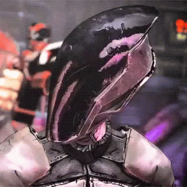
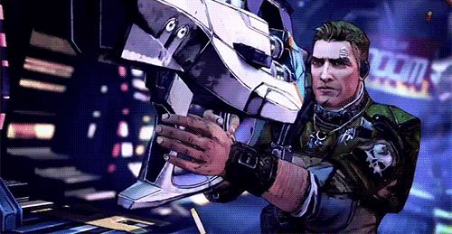
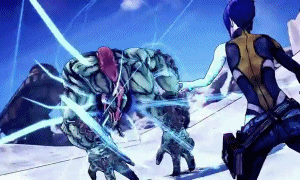
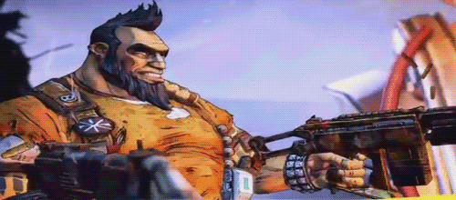

Los buscacámaras en Borderlands son los protagonistas/jugadores, mercenarios que buscan las misteriosas Cámaras alienígenas llenas de tesoros y poder
¿CUALES HAY EN BORDERLANDS 2?
En Borderlands 2 los buscacámaras jugables son Axton, Maya, Salvador y Zer0. Además, con DLCs se añadieron Gaige y Krieg Ahora explicare cada personaje con su video y audio correspondientes.
Zero

Zer0 en Borderlands 2 es el buscacámaras de clase Asesino...
En el juego puedes encontrar unos audios dando más contexto...
Axton

Axton en Borderlands 2 es el buscacámaras de clase Comando...
En el juego puedes encontrar unos audios dando más contexto...
Maya

Maya en Borderlands 2 es la buscacámaras de clase Sirena...
En el juego puedes encontrar unos audios dando más contexto...
Salvador

Salvador en Borderlands 2 es el buscacámaras de clase Gunzerker...
En el juego puedes encontrar unos audios dando más contexto...
EN PROCESO YA QUE CLAPTRAP TODAVIA NO HA SUBIDO LAS ESCALERAS...
Por culpa de claptrap hemos perdido la información de los otros dos buscacámaras